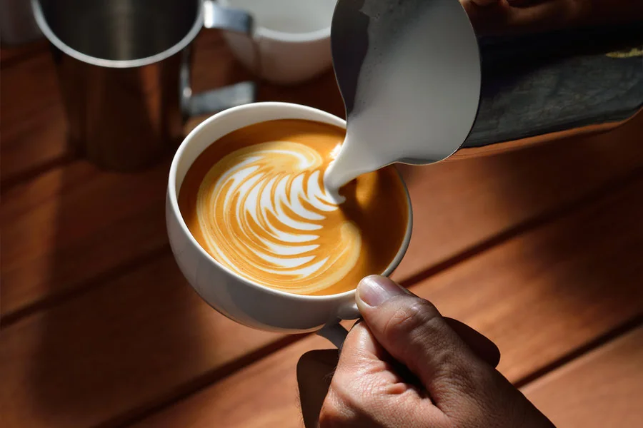
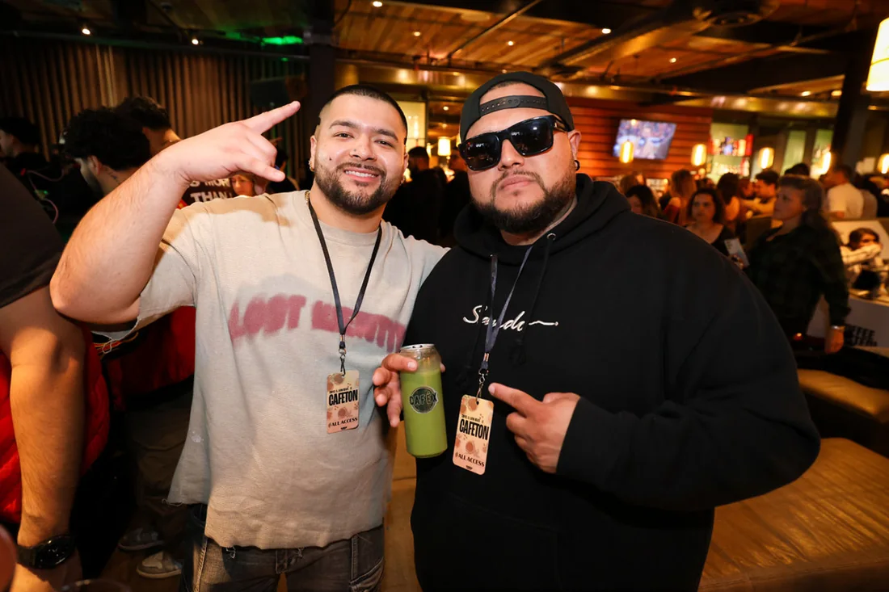
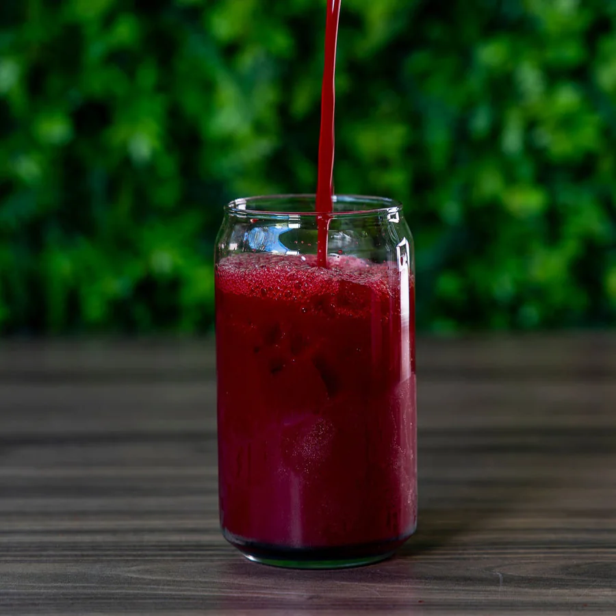
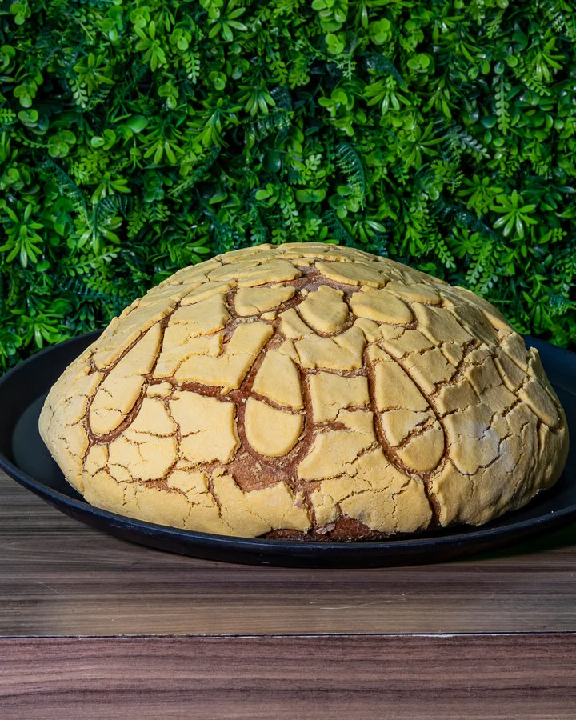
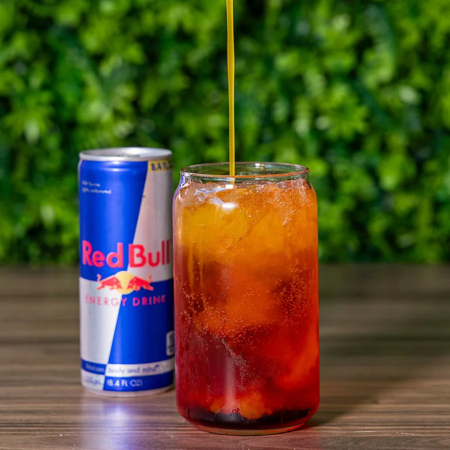
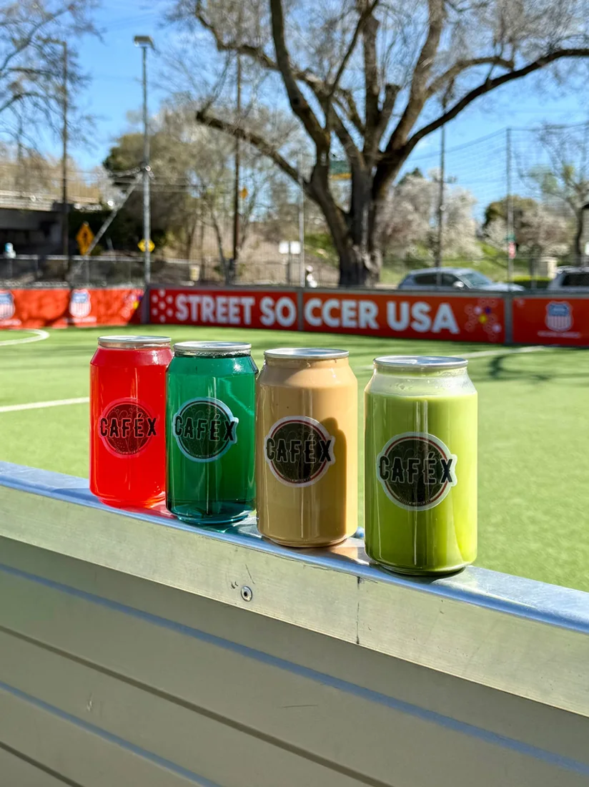

The coffee: Nayarit.
Our coffee comes from Nayarit, Mexico. Roasted dark for a rich, full-bodied cup, it connects our daily ritual to the people and land behind it.
Our story is in the places we come from, the coffee we pour, and the people around our table.

Our founder’s Mexican heritage is at the heart of Café X. The flavors, the generosity, the simple pleasure of gathering over something good: we bring it all to our coffee & juice bar on K Street.
The nopal in our logo stands for resilience and growth. It’s a reminder of where we come from, and what we’re growing together.
Coffee from Nayarit, shared here in Sacramento.

Our coffee comes from Nayarit, Mexico. Roasted dark for a rich, full-bodied cup, it connects our daily ritual to the people and land behind it.

Whole fruits and vegetables, pressed into vibrant juices. Inspired by Mexican juice stands and made with locally sourced produce.

Mini conchitas, a Concha Gigante, and all the sweet things in between. Our daily baked favorites belong next to your coffee.

Our Red Bull partnership brings fruit-forward energy infusions to the menu. Pick your favorite, and take a little extra energy with you.

Coffee, matcha, juices, and energy infusions sealed fresh in cans. One for you, or four-packs and six-packs to share.
We saved you a spot on K Street.
Mon - Fri · 7am - 6pm
Sat - Sun · 7am - 8pm